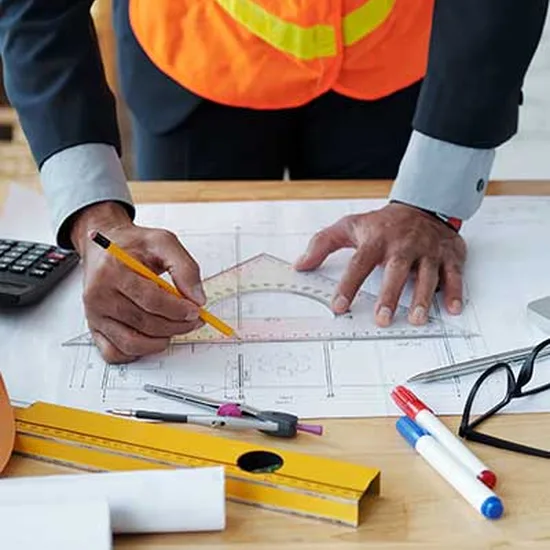
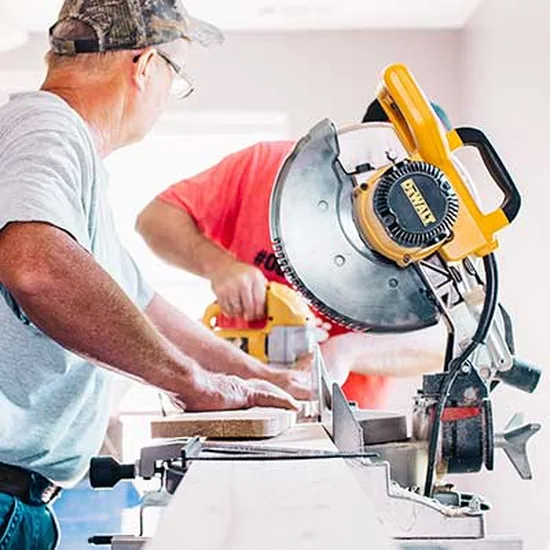
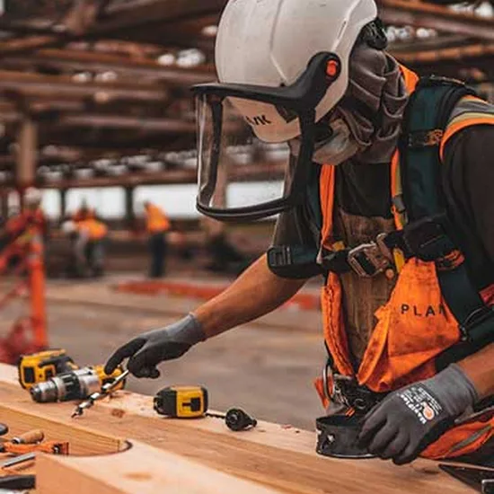

Layanan Kami
Layanan Manufaktur Logam Lengkap untuk Industri

Fabrikasi Struktur Baja
Rangka bangunan, jembatan, tangki, dan bejana tekan hingga 40 ton per unit sesuai AWS D1.1.

Pengecoran Logam
Cor besi kelabu, nodular, baja, dan aluminium untuk pompa, valve, dan casing mesin.

Machining CNC Presisi
Bubut dan frais CNC hingga 5-axis dengan toleransi sampai ±0,01 mm.

Pengelasan & Perakitan
Pengelasan robotik MIG/MAG, TIG, dan SAW serta perakitan sub-unit siap pasang.

Finishing & Perlakuan Permukaan
Galvanis celup panas, cat epoksi, powder coating, dan perlakuan panas terkontrol.

Rekayasa & Desain
Tinjauan desain agar mudah diproduksi, simulasi pengecoran, dan prototipe cepat.